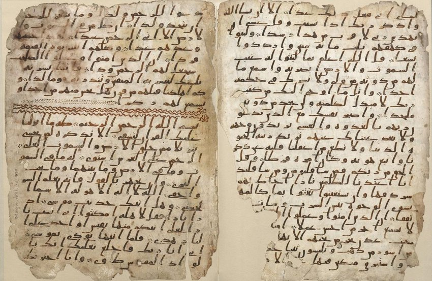
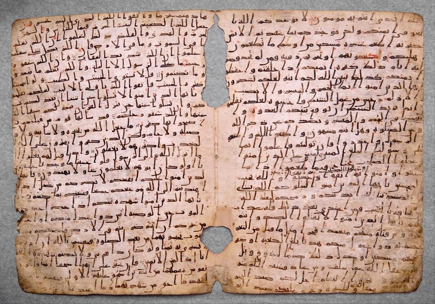
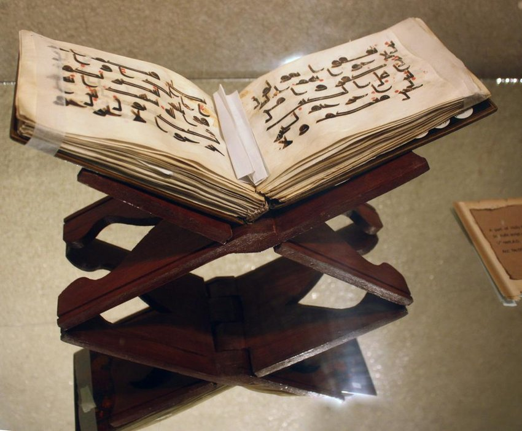
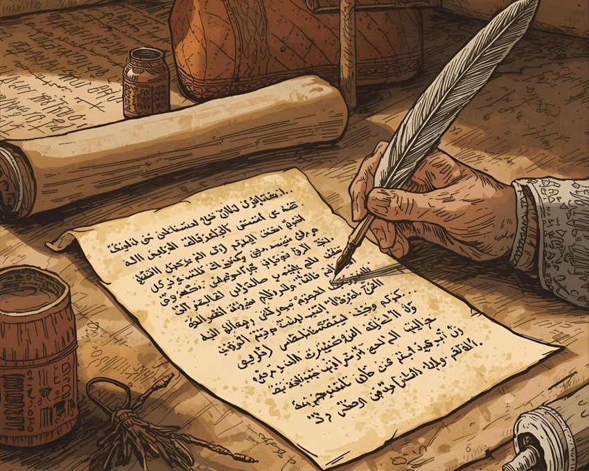
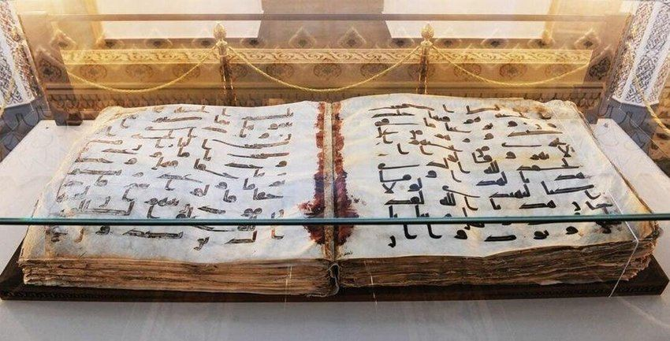
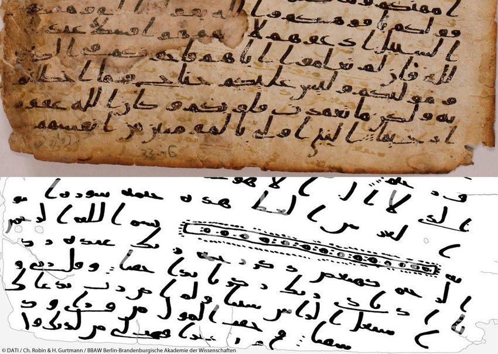
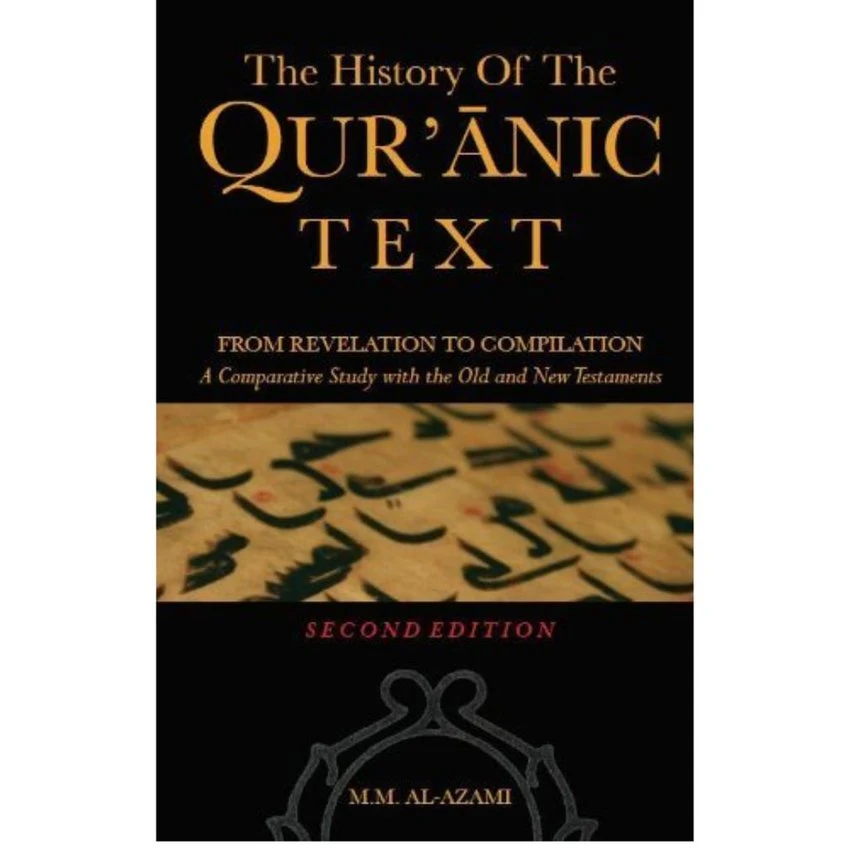
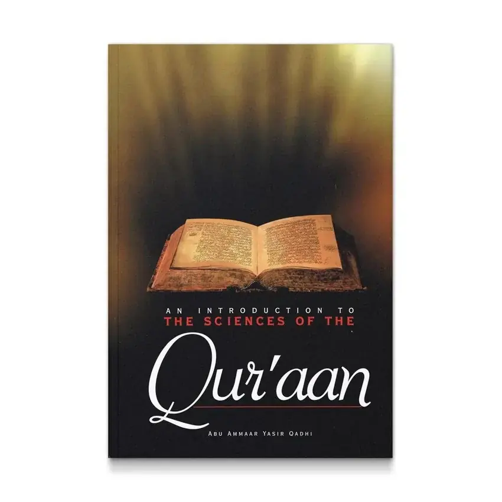
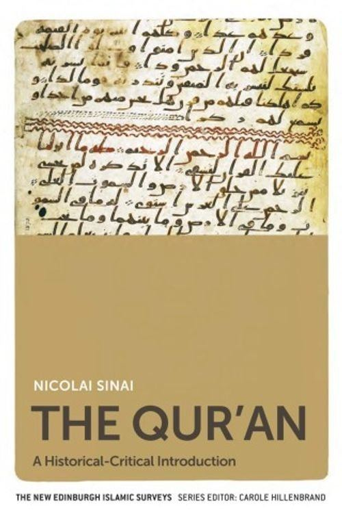
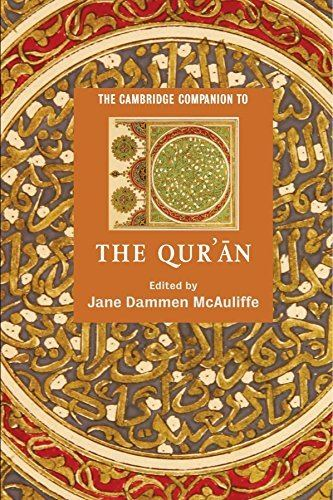

ভূমিকা



পৃথিবীর অন্যতম আলোচিত ধর্মগ্রন্থ হলো পবিত্র আল-কুরআন। প্রায় দেড় হাজার বছর ধরে কোটি কোটি মুসলমান এই গ্রন্থকে আল্লাহর বাণী হিসেবে বিশ্বাস করে আসছেন। কিন্তু কুরআনের উৎস কী? কুরআন কে লিখেছেন? মুহাম্মদ (সা.) কি নিজে কুরআন লিখেছিলেন? কুরআন কি তাঁর জীবদ্দশায় সম্পূর্ণ লিখিত হয়েছিল? নাকি তাঁর মৃত্যুর পরে সাহাবিরা এটি সংকলন করেছেন? আবু বকর (রা.) ও উসমান (রা.)-এর সময় কুরআন সংকলনের মধ্যে পার্থক্য কী?
এগুলো শুধু ধর্মীয় বিশ্বাসের বিষয় নয়; ইসলামের ইতিহাস, হাদিসশাস্ত্র, পাণ্ডুলিপি গবেষণা এবং ঐতিহাসিক অনুসন্ধানেরও গুরুত্বপূর্ণ প্রশ্ন।
এই প্রবন্ধে কুরআনের উৎস থেকে শুরু করে তার অবতরণ, রাসুলুল্লাহ (সা.)-এর জীবদ্দশায় লিখন, আবু বকর (রা.)-এর সময় প্রথম সমন্বিত সংকলন এবং উসমান (রা.)-এর সময় মানসম্মত মুসহাফ প্রস্তুত করার ইতিহাস ধারাবাহিকভাবে আলোচনা করা হবে। পাশাপাশি কুরআন ও সহিহ হাদিসের মূল আরবি বক্তব্য, বাংলা অনুবাদ এবং নির্দিষ্ট রেফারেন্স দেওয়া হবে।
১. কুরআন কে লিখেছেন?
এই প্রশ্নের উত্তর দেওয়ার আগে দুটি বিষয় আলাদা করে বুঝতে হবে:
- কুরআনের প্রকৃত উৎস বা বক্তা কে?
- কুরআনের আয়াতগুলো লিখে সংরক্ষণ করেছেন কারা?
ইসলামের আকিদা অনুযায়ী, কুরআন কোনো মানুষের রচিত গ্রন্থ নয়। এর মূল বক্তা ও উৎস হলেন মহান আল্লাহ। মুহাম্মদ (সা.) কুরআনের রচয়িতা নন; তিনি আল্লাহর পক্ষ থেকে প্রাপ্ত ওহির বাহক ও রাসুল।
আল্লাহ বলেন:
وَإِنَّهُ لَتَنْزِيلُ رَبِّ الْعَالَمِينَ نَزَلَ بِهِ الرُّوحُ الْأَمِينُ عَلَىٰ قَلْبِكَ لِتَكُونَ مِنَ الْمُنْذِرِينَ
অর্থ: “নিশ্চয়ই এটি বিশ্বজগতের প্রতিপালকের পক্ষ থেকে অবতীর্ণ। বিশ্বস্ত ফেরেশতা (জিবরীল) এটি নিয়ে অবতরণ করেছেন, আপনার অন্তরে, যাতে আপনি সতর্ককারীদের অন্তর্ভুক্ত হন।”
রেফারেন্স: সূরা আশ-শুআরা, ২৬:১৯২–১৯৪।
এখানে তিনটি বিষয় পরিষ্কার:
- কুরআনের উৎস আল্লাহ।
- ওহি নিয়ে এসেছেন জিবরীল (আ.)।
- ওহি গ্রহণ করেছেন মুহাম্মদ (সা.)।
অর্থাৎ ইসলামী বিশ্বাস অনুসারে, কুরআন মুহাম্মদ (সা.)-এর ব্যক্তিগত চিন্তা, দর্শন কিংবা সাহিত্যিক রচনা নয়; বরং আল্লাহর পক্ষ থেকে প্রাপ্ত বাণী।
কুরআন কি মুহাম্মদ (সা.)-এর নিজের বক্তব্য?
আল্লাহ বলেন:
وَمَا يَنْطِقُ عَنِ الْهَوَىٰ إِنْ هُوَ إِلَّا وَحْيٌ يُوحَىٰ
অর্থ: “তিনি মনগড়া কোনো কথা বলেন না। এটি তো ওহি, যা তাঁর প্রতি প্রেরিত হয়।”
রেফারেন্স: সূরা আন-নাজম, ৫৩:৩–৪।
তবে এখানে একটি গুরুত্বপূর্ণ পার্থক্য রয়েছে। আয়াতটি ওহি সম্পর্কে; রাসুলুল্লাহ (সা.)-এর প্রত্যেকটি দৈনন্দিন কথাকে কুরআন বলা হচ্ছে না। কুরআন হলো তাঁর প্রতি অবতীর্ণ বিশেষ ওহি। হাদিস ও কুরআন এক জিনিস নয়।
২. কুরআন কীভাবে রাসুলুল্লাহ (সা.)-এর কাছে পৌঁছেছিল?
ইসলামী বিশ্বাস অনুযায়ী, কুরআন একবারে সম্পূর্ণ অবতীর্ণ হয়নি। বরং প্রায় ২৩ বছর ধরে বিভিন্ন সময়ে, বিভিন্ন ঘটনার প্রেক্ষাপটে ধাপে ধাপে অবতীর্ণ হয়েছে।
প্রথম ওহি অবতীর্ণ হয়েছিল মক্কার হেরা গুহায়, যখন মুহাম্মদ (সা.)-এর বয়স ছিল ৪০ বছর।
প্রথম ওহির ঘটনা
আয়িশা (রা.) থেকে বর্ণিত, রাসুলুল্লাহ (সা.)-এর কাছে প্রথম ওহি এসেছিল সত্য স্বপ্নের মাধ্যমে। এরপর তিনি হেরা গুহায় নির্জনে ইবাদত করতেন। একপর্যায়ে ফেরেশতা এসে তাঁকে বললেন, ‘পড়ুন’।
প্রথম অবতীর্ণ আয়াতগুলো হলো:
اقْرَأْ بِاسْمِ رَبِّكَ الَّذِي خَلَقَ خَلَقَ الْإِنْسَانَ مِنْ عَلَقٍ اقْرَأْ وَرَبُّكَ الْأَكْرَمُ الَّذِي عَلَّمَ بِالْقَلَمِ عَلَّمَ الْإِنْسَانَ مَا لَمْ يَعْلَمْ
অর্থ: “পড়ুন আপনার প্রতিপালকের নামে, যিনি সৃষ্টি করেছেন। তিনি মানুষকে সৃষ্টি করেছেন জমাট রক্তপিণ্ড থেকে। পড়ুন, আর আপনার প্রতিপালক মহামহিমান্বিত। যিনি কলমের সাহায্যে শিক্ষা দিয়েছেন। মানুষকে শিক্ষা দিয়েছেন যা সে জানত না।”
রেফারেন্স: সূরা আল-আলাক, ৯৬:১–৫।
হাদিসের রেফারেন্স: সহিহ বুখারি, হাদিস ৩।
এটি ছিল কুরআনের প্রথম ওহি। এরপর দীর্ঘ সময় ধরে বিভিন্ন পরিস্থিতিতে কুরআনের অন্যান্য আয়াত অবতীর্ণ হতে থাকে।
২৩ বছরে কুরআন অবতীর্ণ হওয়ার প্রমাণ
আল্লাহ বলেন:
وَقُرْآنًا فَرَقْنَاهُ لِتَقْرَأَهُ عَلَى النَّاسِ عَلَىٰ مُكْثٍ وَنَزَّلْنَاهُ تَنْزِيلًا
অর্থ: “আর কুরআনকে আমি পৃথক পৃথকভাবে অবতীর্ণ করেছি, যাতে আপনি তা মানুষের কাছে ধীরে ধীরে পাঠ করেন এবং আমি তা পর্যায়ক্রমে অবতীর্ণ করেছি।”
রেফারেন্স: সূরা আল-ইসরা, ১৭:১০৬।
আরেকটি আয়াতে বলা হয়েছে:
وَقَالَ الَّذِينَ كَفَرُوا لَوْلَا نُزِّلَ عَلَيْهِ الْقُرْآنُ جُمْلَةً وَاحِدَةً ۚ كَذَٰلِكَ لِنُثَبِّتَ بِهِ فُؤَادَكَ ۖ وَرَتَّلْنَاهُ تَرْتِيلًا
অর্থ: “কাফিররা বলে, তাঁর ওপর সম্পূর্ণ কুরআন একবারে অবতীর্ণ করা হলো না কেন? এভাবে অবতীর্ণ করেছি আপনার হৃদয়কে দৃঢ় করার জন্য এবং আমি তা সুস্পষ্টভাবে পর্যায়ক্রমে পাঠ করেছি।”
রেফারেন্স: সূরা আল-ফুরকান, ২৫:৩২।
অর্থাৎ কুরআন ধাপে ধাপে অবতীর্ণ হওয়ার পেছনে শিক্ষা, নির্দেশনা, পরিস্থিতির মোকাবিলা এবং রাসুলুল্লাহ (সা.)-এর হৃদয়কে দৃঢ় করার বিষয় ছিল।
৩. রাসুলুল্লাহ (সা.)-এর জীবদ্দশায় কুরআন কি লিখিত হয়েছিল?
এটি কুরআনের সংকলনের ইতিহাসের সবচেয়ে গুরুত্বপূর্ণ অংশগুলোর একটি।
অনেকে মনে করেন, রাসুলুল্লাহ (সা.)-এর মৃত্যুর পরে সাহাবিরা প্রথমবার কুরআন লিখেছিলেন। কিন্তু সহিহ হাদিস থেকে জানা যায়, তাঁর জীবদ্দশাতেই কুরআনের আয়াত লিখে সংরক্ষণ করা হতো।
ওহি অবতীর্ণ হলে রাসুলুল্লাহ (সা.) সাহাবিদের তা মুখস্থ করাতেন এবং ওহি লেখকদের দিয়ে লিখিয়ে রাখতেন।
ওহি লেখক কারা ছিলেন?
রাসুলুল্লাহ (সা.)-এর যুগে একাধিক সাহাবি ওহি লিখতেন। তাঁদের মধ্যে উল্লেখযোগ্য:
- যায়েদ ইবনে সাবিত (রা.)।
- উবাই ইবনে কাব (রা.)।
- আলী ইবনে আবি তালিব (রা.)।
- মুয়াবিয়া ইবনে আবি সুফিয়ান (রা.)।
- আবদুল্লাহ ইবনে সা'দ ইবনে আবি সারহ (রা.)।
তাঁদের মধ্যে যায়েদ ইবনে সাবিত (রা.) কুরআন সংকলনের পরবর্তী ইতিহাসে বিশেষ গুরুত্বপূর্ণ ভূমিকা পালন করেন।
এর প্রমাণ হিসেবে আবু বকর (রা.)-এর সময়কার সংকলন সম্পর্কে যায়েদ ইবনে সাবিত (রা.) নিজেই বলেন:
وَقَدْ كُنْتَ تَكْتُبُ الْوَحْيَ لِرَسُولِ اللَّهِ صَلَّى اللَّهُ عَلَيْهِ وَسَلَّمَ
অর্থ: “তুমি তো রাসুলুল্লাহ (সা.)-এর জন্য ওহি লিখতে।”
রেফারেন্স: সহিহ বুখারি, হাদিস ৪৯৮৬।
এখানে আবু বকর (রা.) সরাসরি যায়েদ ইবনে সাবিত (রা.)-কে বলছেন যে তিনি রাসুলুল্লাহ (সা.)-এর জন্য ওহি লিখতেন। সুতরাং রাসুলুল্লাহ (সা.)-এর জীবদ্দশাতেই কুরআন লিখে রাখার বিষয়টি সহিহ হাদিস দ্বারা প্রতিষ্ঠিত।
তখন কুরআন কীসের ওপর লেখা হতো?

তৎকালীন আরব সমাজে কাগজের ব্যবহার আজকের মতো সহজলভ্য ছিল না। তাই বিভিন্ন উপকরণে কুরআনের আয়াত লেখা হতো।
সহিহ বুখারিতে এসেছে:
فَتَتَبَّعْتُ الْقُرْآنَ أَجْمَعُهُ مِنَ الْعُسُبِ وَاللِّخَافِ وَصُدُورِ الرِّجَالِ
অর্থ: “আমি খেজুরের ডাল, পাথরের পাতলা টুকরা এবং মানুষের বক্ষ (মুখস্থ স্মৃতি) থেকে কুরআন অনুসন্ধান করে একত্র করলাম।”
রেফারেন্স: সহিহ বুখারি, হাদিস ৪৯৮৬।
এখানে ব্যবহৃত উপকরণগুলো হলো:
- العُسُب (আল-উসুব): খেজুরগাছের প্রশস্ত ডাল বা পত্রদণ্ড।
- اللِّخَاف (আল-লিখাফ): পাতলা পাথরের টুকরা।
- صُدُورُ الرِّجَالِ: মানুষের মুখস্থ স্মৃতি।
এ ছাড়াও চামড়া, হাড় এবং অন্যান্য লেখার উপকরণ ব্যবহারের কথা ইসলামী ঐতিহাসিক বর্ণনায় পাওয়া যায়।
তাহলে রাসুলুল্লাহ (সা.)-এর সময়েই সম্পূর্ণ কুরআন এক মলাটে সংকলিত হয়নি কেন?
এখানে দুটি বিষয় আলাদা করতে হবে:
- কুরআনের আয়াত লিখে সংরক্ষণ করা।
- সব আয়াত ও সূরাকে একত্র করে একটি নির্দিষ্ট সংকলিত পাণ্ডুলিপি তৈরি করা।
প্রথম কাজটি রাসুলুল্লাহ (সা.)-এর জীবদ্দশাতেই চলছিল। কিন্তু দ্বিতীয় কাজটি পরবর্তী সময়ে সম্পন্ন হয়।
এর একটি গুরুত্বপূর্ণ কারণ হলো, রাসুলুল্লাহ (সা.)-এর জীবদ্দশায় ওহি অবতরণ অব্যাহত ছিল। কোনো আয়াত অবতীর্ণ হলে সেটি লিখে রাখা হতো এবং সূরার মধ্যে তার অবস্থান রাসুলুল্লাহ (সা.)-এর নির্দেশনা অনুযায়ী নির্ধারিত হতো।
তাই ওহি অবতরণের সময় শেষ হওয়ার আগে চূড়ান্ত সংকলিত পাণ্ডুলিপি প্রস্তুত করার প্রয়োজনীয়তা ও পরিস্থিতি পরবর্তী সময়ের মতো ছিল না।
৪. রাসুলুল্লাহ (সা.)-এর সময় কুরআন মুখস্থ ও পর্যালোচনার ব্যবস্থা
কুরআন শুধু লিখিত উপকরণের ওপর নির্ভরশীল ছিল না। বরং সাহাবিদের মধ্যে কুরআন মুখস্থ করার একটি শক্তিশালী ধারাও বিদ্যমান ছিল।
রাসুলুল্লাহ (সা.) নিজে কুরআন তিলাওয়াত করতেন, সাহাবিরা তা শিখতেন এবং পরস্পরের কাছে পাঠ করতেন।
জিবরীল (আ.)-এর সঙ্গে কুরআন পর্যালোচনা
ইবনে আব্বাস (রা.) থেকে বর্ণিত:
كَانَ جِبْرِيلُ يَلْقَاهُ فِي كُلِّ لَيْلَةٍ مِنْ رَمَضَانَ فَيُدَارِسُهُ الْقُرْآنَ
অর্থ: “প্রতি রমজানের রাতে জিবরীল তাঁর সঙ্গে সাক্ষাৎ করতেন এবং তাঁর সঙ্গে কুরআন অধ্যয়ন ও পর্যালোচনা করতেন।”
রেফারেন্স: সহিহ বুখারি, হাদিস ৬।
আরেকটি বর্ণনায় এসেছে, রাসুলুল্লাহ (সা.)-এর জীবনের শেষ বছরে জিবরীল (আ.) তাঁর সঙ্গে দুইবার কুরআন পর্যালোচনা করেছিলেন।
রেফারেন্স: সহিহ বুখারি, হাদিস ৪৯৯৮; সহিহ মুসলিম, হাদিস ২৪৫০।
এই ঘটনাকে ইসলামী পরিভাষায় আল-আরদাহ আল-আখিরাহ (العرضة الأخيرة), অর্থাৎ শেষবারের কুরআন পর্যালোচনা বলা হয়।
এখান থেকে বোঝা যায়, কুরআনের সংরক্ষণে লিখিত পাণ্ডুলিপির পাশাপাশি মুখস্থ ও পুনরালোচনার ব্যবস্থাও ছিল।
৫. আবু বকর (রা.)-এর শাসনামলে কুরআন প্রথম সমন্বিতভাবে সংকলিত হয়
রাসুলুল্লাহ (সা.)-এর মৃত্যুর পর আবু বকর আস-সিদ্দিক (রা.) মুসলিমদের প্রথম খলিফা হন।
তাঁর শাসনামলে একটি গুরুত্বপূর্ণ ঘটনা ঘটে, যা কুরআন সংকলনের ইতিহাসে নতুন অধ্যায়ের সূচনা করে।
ইয়ামামার যুদ্ধ ও কুরআন সংকলনের উদ্যোগ
রাসুলুল্লাহ (সা.)-এর মৃত্যুর পর ইয়ামামার যুদ্ধে অনেক সাহাবি শহীদ হন। তাঁদের মধ্যে কুরআনের বহু হাফেজও ছিলেন।
উমর ইবনুল খাত্তাব (রা.) আশঙ্কা করলেন, ভবিষ্যতে বিভিন্ন যুদ্ধে আরও হাফেজ শহীদ হলে কুরআনের সংরক্ষণে সমস্যা তৈরি হতে পারে।
তাই তিনি আবু বকর (রা.)-কে কুরআন একত্রে সংকলনের পরামর্শ দেন।
এই ঘটনা বিস্তারিতভাবে বর্ণিত হয়েছে সহিহ বুখারিতে।
সহিহ বুখারির মূল হাদিস
যায়েদ ইবনে সাবিত (রা.) বর্ণনা করেন:
أَرْسَلَ إِلَيَّ أَبُو بَكْرٍ مَقْتَلَ أَهْلِ الْيَمَامَةِ فَإِذَا عُمَرُ بْنُ الْخَطَّابِ عِنْدَهُ
অর্থ: “ইয়ামামার যুদ্ধের পর আবু বকর আমাকে ডেকে পাঠালেন। সেখানে উমর ইবনুল খাত্তাবও উপস্থিত ছিলেন।”
এরপর আবু বকর (রা.) বললেন, উমর তাঁকে জানিয়েছেন যে ইয়ামামার যুদ্ধে কুরআনের অনেক পাঠক ও হাফেজ শহীদ হয়েছেন। ভবিষ্যতে এভাবে আরও শহীদ হলে কুরআনের অনেক অংশ হারিয়ে যাওয়ার আশঙ্কা রয়েছে। তাই কুরআন একত্রে সংকলন করা উচিত।
প্রথমে আবু বকর (রা.) বললেন:
كَيْفَ تَفْعَلُ شَيْئًا لَمْ يَفْعَلْهُ رَسُولُ اللَّهِ صَلَّى اللَّهُ عَلَيْهِ وَسَلَّمَ
অর্থ: “রাসুলুল্লাহ (সা.) যে কাজ করেননি, আমি কীভাবে সেই কাজ করব?”
উমর (রা.) তাঁকে বোঝালেন যে এটি একটি কল্যাণকর উদ্যোগ। পরবর্তী সময়ে আবু বকর (রা.)-ও এ সিদ্ধান্তে সম্মত হন।
এরপর যায়েদ ইবনে সাবিত (রা.)-কে কুরআন সংকলনের দায়িত্ব দেওয়া হয়।
সম্পূর্ণ রেফারেন্স: সহিহ আল-বুখারি, কিতাব ফাদায়িলিল কুরআন, অধ্যায়: جمع القرآن, হাদিস ৪৯৮৬।
যায়েদ ইবনে সাবিত (রা.) কেন নির্বাচিত হয়েছিলেন?
আবু বকর (রা.) তাঁর সম্পর্কে বলেছিলেন:
- তিনি যুবক ছিলেন।
- তিনি বুদ্ধিমান ও বিশ্বস্ত ছিলেন।
- তিনি রাসুলুল্লাহ (সা.)-এর জন্য ওহি লিখতেন।
- তাঁর কুরআন লেখার অভিজ্ঞতা ছিল।
অর্থাৎ কুরআন সংকলনের মতো গুরুত্বপূর্ণ দায়িত্ব একজন অভিজ্ঞ ওহি লেখকের ওপর অর্পণ করা হয়েছিল।
কীভাবে কুরআন একত্র করা হয়েছিল?
যায়েদ ইবনে সাবিত (রা.) শুধু নিজের স্মৃতির ওপর নির্ভর করেননি। তিনি বিভিন্ন লিখিত উপকরণ এবং সাহাবিদের মুখস্থ পাঠ থেকে কুরআনের আয়াত সংগ্রহ করেন।
এটি ছিল একটি গুরুত্বপূর্ণ সংরক্ষণমূলক প্রক্রিয়া।
তিনি বলেন:
فَتَتَبَّعْتُ الْقُرْآنَ أَجْمَعُهُ مِنَ الْعُسُبِ وَاللِّخَافِ وَصُدُورِ الرِّجَالِ
অর্থ: “আমি খেজুরের ডাল, পাথরের পাতলা টুকরা এবং মানুষের বক্ষ থেকে কুরআন অনুসন্ধান করে একত্র করলাম।”
এই প্রক্রিয়ায় কুরআনের লিখিত উপাদান ও মুখস্থ পাঠকে একত্র করা হয়।
সূরা তাওবার শেষ দুই আয়াতের ঘটনা
এই হাদিসে যায়েদ (রা.) আরও বলেন, সূরা তাওবার শেষ অংশের দুটি আয়াত তিনি আবু খুযাইমা আল-আনসারির কাছে পান।
আয়াত দুটি হলো:
لَقَدْ جَاءَكُمْ رَسُولٌ مِّنْ أَنْفُسِكُمْ عَزِيزٌ عَلَيْهِ مَا عَنِتُّمْ حَرِيصٌ عَلَيْكُم بِالْمُؤْمِنِينَ رَءُوفٌ رَّحِيمٌ فَإِن تَوَلَّوْا فَقُلْ حَسْبِيَ اللَّهُ لَا إِلَٰهَ إِلَّا هُوَ عَلَيْهِ تَوَكَّلْتُ وَهُوَ رَبُّ الْعَرْشِ الْعَظِيمِ
রেফারেন্স: সূরা আত-তাওবা, ৯:১২৮–১২৯।
এখানে একটি বিষয় পরিষ্কার করা জরুরি: হাদিসে বলা হয়েছে, সংকলনের সময় ওই লিখিত আয়াত দুটি নির্দিষ্ট ব্যক্তির কাছে পাওয়া গিয়েছিল। এর অর্থ এই নয় যে অন্য কোনো সাহাবি আয়াত দুটি জানতেন না বা মুখস্থ রাখেননি। কারণ একই বর্ণনায় যায়েদ (রা.) লিখিত উপকরণ ও মানুষের মুখস্থ স্মৃতি—উভয় উৎস থেকেই কুরআন সংগ্রহের কথা বলেছেন।
আবু বকর (রা.)-এর সময় সংকলিত কুরআনের পাণ্ডুলিপির পরবর্তী অবস্থা
কুরআন সংকলনের পর পাণ্ডুলিপিগুলো সংরক্ষিত ছিল।
যায়েদ ইবনে সাবিত (রা.)-এর বর্ণনা অনুযায়ী:
- প্রথমে পাণ্ডুলিপিগুলো আবু বকর (রা.)-এর কাছে ছিল।
- তাঁর মৃত্যুর পর উমর (রা.)-এর কাছে ছিল।
- উমর (রা.)-এর মৃত্যুর পর তাঁর কন্যা ও রাসুলুল্লাহ (সা.)-এর স্ত্রী হাফসা (রা.)-এর কাছে সংরক্ষিত ছিল।
রেফারেন্স: সহিহ বুখারি, হাদিস ৪৯৮৬।
এখানে একটি গুরুত্বপূর্ণ ঐতিহাসিক পার্থক্য মনে রাখতে হবে: আবু বকর (রা.)-এর সময় কুরআন প্রথমবার একটি সমন্বিত লিখিত সংকলনে একত্র করা হয়েছিল। এটি কুরআনের নতুন কোনো সংস্করণ তৈরি করা ছিল না।
৬. উসমান (রা.)-এর শাসনামলে কুরআনের মানসম্মত মুসহাফ প্রস্তুত

আবু বকর (রা.)-এর সময় কুরআন একত্রে সংকলিত হওয়ার পর সেটি হাফসা (রা.)-এর কাছে সংরক্ষিত ছিল।
কিন্তু পরবর্তী সময়ে ইসলামী সাম্রাজ্য অনেক বিস্তৃত হয়ে যায়। আরবের বিভিন্ন অঞ্চল ছাড়িয়ে মুসলমানরা সিরিয়া, ইরাক, আর্মেনিয়া, আজারবাইজানসহ বিভিন্ন অঞ্চলে ছড়িয়ে পড়েন।
এর ফলে কুরআন তিলাওয়াতের বিভিন্ন অনুমোদিত পদ্ধতি ও আঞ্চলিক পাঠভঙ্গি নিয়ে সাধারণ মানুষের মধ্যে মতপার্থক্য দেখা দিতে থাকে।
মতপার্থক্যের ঘটনা কীভাবে ঘটেছিল?
হুযাইফা ইবনুল ইয়ামান (রা.) আর্মেনিয়া ও আজারবাইজান অভিযানে গিয়ে বিভিন্ন অঞ্চলের মুসলমানদের মধ্যে কুরআন পাঠের মতপার্থক্য দেখতে পান।
তিনি আশঙ্কা করলেন, এ মতপার্থক্য ভবিষ্যতে মুসলিম উম্মাহর মধ্যে বড় ধরনের বিভেদ সৃষ্টি করতে পারে।
তাই তিনি তৃতীয় খলিফা উসমান ইবনে আফফান (রা.)-এর কাছে বিষয়টি তুলে ধরেন।
সহিহ বুখারির হাদিস
আনাস ইবনে মালিক (রা.) থেকে বর্ণিত:
أَنَّ حُذَيْفَةَ بْنَ الْيَمَانِ قَدِمَ عَلَى عُثْمَانَ
অর্থ: “হুযাইফা ইবনুল ইয়ামান উসমান (রা.)-এর কাছে এলেন।”
তিনি কুরআন পাঠের মতপার্থক্য দেখে উসমান (রা.)-কে বললেন:
يَا أَمِيرَ الْمُؤْمِنِينَ أَدْرِكْ هَذِهِ الْأُمَّةَ قَبْلَ أَنْ يَخْتَلِفُوا فِي الْكِتَابِ اخْتِلَافَ الْيَهُودِ وَالنَّصَارَى
অর্থ: “হে আমিরুল মুমিনিন! এই উম্মাহর ব্যাপারে ব্যবস্থা নিন, যাতে তারা কিতাবের ব্যাপারে ইহুদি ও খ্রিষ্টানদের মতো মতপার্থক্যে লিপ্ত হওয়ার আগেই সমস্যাটির সমাধান হয়।”
এরপর উসমান (রা.) হাফসা (রা.)-এর কাছে সংরক্ষিত পাণ্ডুলিপি চেয়ে পাঠান।
তিনি সেগুলোর ভিত্তিতে একাধিক মানসম্মত মুসহাফ প্রস্তুত করার উদ্যোগ নেন।
রেফারেন্স: সহিহ বুখারি, হাদিস ৪৯৮৭।
উসমান (রা.)-এর সংকলন কমিটিতে কারা ছিলেন?
উসমান (রা.) চারজন সাহাবিকে এই দায়িত্ব দেন:
- যায়েদ ইবনে সাবিত (রা.)।
- আবদুল্লাহ ইবনে যুবাইর (রা.)।
- সাঈদ ইবনে আস (রা.)।
- আবদুর রহমান ইবনে হারিস ইবনে হিশাম (রা.)।
তাঁরা হাফসা (রা.)-এর কাছে সংরক্ষিত পাণ্ডুলিপির ভিত্তিতে একাধিক মুসহাফ প্রস্তুত করেন।
কুরআনের ভাষা নিয়ে মতপার্থক্য হলে কী নির্দেশ দেওয়া হয়েছিল?
উসমান (রা.) কমিটির সদস্যদের নির্দেশ দেন:
إِذَا اخْتَلَفْتُمْ أَنْتُمْ وَزَيْدُ بْنُ ثَابِتٍ فِي شَيْءٍ مِنَ الْقُرْآنِ فَاكْتُبُوهُ بِلِسَانِ قُرَيْشٍ فَإِنَّمَا نَزَلَ بِلِسَانِهِمْ
অর্থ: “কুরআনের কোনো বিষয়ে তোমাদের ও যায়েদ ইবনে সাবিতের মধ্যে মতপার্থক্য হলে তা কুরাইশদের ভাষারীতি অনুযায়ী লিখবে। কারণ কুরআন তাদের ভাষারীতিতে অবতীর্ণ হয়েছে।”
রেফারেন্স: সহিহ বুখারি, হাদিস ৪৯৮৭।
এরপর কী করা হয়েছিল?
মানসম্মত মুসহাফ প্রস্তুত হওয়ার পর উসমান (রা.) সেগুলোর অনুলিপি বিভিন্ন অঞ্চলে পাঠিয়ে দেন।
তিনি অন্য ব্যক্তিগত লিখিত সংকলন ও বিচ্ছিন্ন পাণ্ডুলিপিগুলো সরিয়ে ফেলার নির্দেশ দেন, যাতে সেগুলোকে ভিন্ন সরকারি কুরআন হিসেবে ব্যবহার করে বিভ্রান্তি সৃষ্টি না হয়।
সহিহ বুখারিতে এসেছে:
وَأَرْسَلَ إِلَى كُلِّ أُفُقٍ بِمُصْحَفٍ مِمَّا نَسَخُوا
অর্থ: “তাঁরা যে মুসহাফগুলো অনুলিপি করেছিলেন, সেখান থেকে প্রত্যেক অঞ্চলে একটি করে মুসহাফ পাঠিয়ে দিলেন।”
রেফারেন্স: সহিহ বুখারি, ৪৯৮৭।
এখানে একটি বিষয় বিশেষভাবে লক্ষণীয়:
উসমান (রা.) নতুন করে কুরআনের আয়াত রচনা করেননি, নতুন কোনো সূরা সংযোজন করেননি এবং নিজের পছন্দ অনুযায়ী ধর্মগ্রন্থ তৈরি করেননি। বরং পূর্ববর্তী সংকলিত পাণ্ডুলিপির ভিত্তিতে একটি মানসম্মত লিখিত পাঠ প্রচলন করেন।
৭. আবু বকর (রা.) ও উসমান (রা.)-এর সংকলনের মধ্যে পার্থক্য কী?
অনেকেই প্রশ্ন করেন, কুরআন যদি আবু বকর (রা.)-এর সময় সংকলিত হয়ে থাকে, তাহলে উসমান (রা.) আবার কেন সংকলন করলেন?
এর উত্তর হলো, দুজনের উদ্যোগের উদ্দেশ্য ও কাজের ধরন আলাদা ছিল।
| বিষয় | আবু বকর (রা.) | উসমান (রা.) |
|---|---|---|
| মূল উদ্দেশ্য | কুরআন একত্রে সংরক্ষণ | পাঠের ঐক্য প্রতিষ্ঠা |
| প্রধান কারণ | হাফেজদের শহীদ হওয়ার আশঙ্কা | বিভিন্ন অঞ্চলে পাঠের মতপার্থক্য |
| ভিত্তি | লিখিত উপকরণ ও মুখস্থ পাঠ | হাফসার কাছে সংরক্ষিত সহিফা |
| প্রধান দায়িত্বপ্রাপ্ত | যায়েদ ইবনে সাবিত | চার সদস্যের কমিটি |
| ফলাফল | সমন্বিত পাণ্ডুলিপি | মানসম্মত একাধিক মুসহাফ |
| পরবর্তী অবস্থা | হাফসা (রা.)-এর কাছে সংরক্ষিত | বিভিন্ন অঞ্চলে অনুলিপি পাঠানো |
সহজভাবে বললে:
আবু বকর (রা.)-এর উদ্যোগ ছিল কুরআনকে একত্রিত করে সংরক্ষণ করা। আর উসমান (রা.)-এর উদ্যোগ ছিল সেই সংকলনের ভিত্তিতে মুসলিম উম্মাহর জন্য মানসম্মত মুসহাফ প্রচলন করা।
এই দুটি ঘটনা পরস্পরের বিরোধী নয়; বরং কুরআনের সংরক্ষণ ইতিহাসের দুটি ধারাবাহিক অধ্যায়।
৮. কুরআনের সংরক্ষণ সম্পর্কে কুরআন নিজে কী বলেছে?
ইসলামী বিশ্বাস অনুযায়ী, আল্লাহ নিজেই কুরআন সংরক্ষণের দায়িত্ব নিয়েছেন।
আল্লাহ বলেন:
إِنَّا نَحْنُ نَزَّلْنَا الذِّكْرَ وَإِنَّا لَهُ لَحَافِظُونَ
অর্থ: “নিশ্চয়ই আমরাই এই উপদেশ (কুরআন) অবতীর্ণ করেছি এবং আমরাই এর সংরক্ষক।”
রেফারেন্স: সূরা আল-হিজর, ১৫:৯।
এটি কুরআন সংরক্ষণের ব্যাপারে মুসলমানদের অন্যতম প্রধান আকিদাগত ভিত্তি।
আরেকটি আয়াতে আল্লাহ বলেন:
لَا يَأْتِيهِ الْبَاطِلُ مِنْ بَيْنِ يَدَيْهِ وَلَا مِنْ خَلْفِهِ تَنْزِيلٌ مِّنْ حَكِيمٍ حَمِيدٍ
অর্থ: “এর সামনে কিংবা পেছন থেকে কোনো মিথ্যা এতে প্রবেশ করতে পারে না। এটি প্রজ্ঞাময়, প্রশংসিত সত্তার পক্ষ থেকে অবতীর্ণ।”
রেফারেন্স: সূরা ফুসসিলাত, ৪১:৪২।
এখানে লক্ষণীয়, কুরআনের সংরক্ষণ শুধু একটি দাবি হিসেবে উপস্থাপিত হয়নি; ইসলামী ইতিহাসে এর লিখিত সংকলন, মুখস্থ পাঠ এবং বিভিন্ন অঞ্চলে মুসহাফ প্রচারের বিবরণও পাওয়া যায়।
৯. কুরআন কি শুধু একজন মানুষের মাধ্যমে সংরক্ষিত হয়েছিল?
না। কুরআনের সংরক্ষণের ইতিহাসে একাধিক ব্যবস্থা কাজ করেছে।
প্রথমত: মুখস্থ সংরক্ষণ।
সাহাবিদের মধ্যে কুরআন মুখস্থ করার প্রচলন ছিল। তাঁরা নামাজে, ব্যক্তিগত ইবাদতে এবং শিক্ষাদানের মাধ্যমে কুরআন পাঠ করতেন।
দ্বিতীয়ত: লিখিত সংরক্ষণ।
ওহি লেখকরা রাসুলুল্লাহ (সা.)-এর জীবদ্দশায় আয়াত লিখে রাখতেন।
তৃতীয়ত: পারস্পরিক শিক্ষা ও পাঠ।
সাহাবিরা একে অপরের কাছ থেকে কুরআন শিখতেন এবং তিলাওয়াত যাচাই করতেন।
চতুর্থত: সমন্বিত সংকলন।
আবু বকর (রা.)-এর সময় বিভিন্ন লিখিত উপকরণ ও মুখস্থ পাঠ একত্রিত করা হয়।
পঞ্চমত: মানসম্মত মুসহাফ প্রচার।
উসমান (রা.)-এর সময় বিভিন্ন অঞ্চলে মানসম্মত মুসহাফ পাঠানো হয়।
এই ব্যবস্থাগুলোকে একত্রে বিবেচনা করলে কুরআনের সংরক্ষণ ও সংকলনের ঐতিহাসিক প্রক্রিয়াটি আরও পরিষ্কার হয়ে ওঠে।
১০. প্রাচীন কুরআনের পাণ্ডুলিপি কি আজও পাওয়া যায়?

হ্যাঁ। কুরআনের প্রাচীন পাণ্ডুলিপি আজও বিভিন্ন জাদুঘর ও গবেষণাপ্রতিষ্ঠানে সংরক্ষিত রয়েছে।
এগুলো কুরআনের লিখিত ইতিহাস ও প্রাচীন আরবি লিপি গবেষণার ক্ষেত্রে গুরুত্বপূর্ণ।
ক. বার্মিংহাম কুরআন পাণ্ডুলিপি
যুক্তরাজ্যের বার্মিংহাম বিশ্ববিদ্যালয়ে সংরক্ষিত একটি বিখ্যাত প্রাচীন কুরআনের পাণ্ডুলিপি হলো Birmingham Quran Manuscript।
এতে সূরা আল-কাহফ, মারইয়াম ও ত্বা-হা-এর কিছু অংশ রয়েছে।
অক্সফোর্ড বিশ্ববিদ্যালয়ের রেডিওকার্বন পরীক্ষায় পাণ্ডুলিপির চামড়ার তারিখ ৫৬৮–৬৪৫ খ্রিষ্টাব্দের মধ্যে হওয়ার সম্ভাবনা ৯৫.৪ শতাংশ নির্ধারণ করা হয়েছে।
এটি গুরুত্বপূর্ণ, কারণ এই তারিখের পরিসর মুহাম্মদ (সা.)-এর জীবনকাল এবং প্রথম খলিফাদের সময়ের কাছাকাছি।
তবে একটি বৈজ্ঞানিক বিষয় মনে রাখতে হবে: রেডিওকার্বন পরীক্ষা পাণ্ডুলিপির চামড়ার বয়স নির্ধারণ করে; কালি দিয়ে লেখার সুনির্দিষ্ট তারিখ সরাসরি নির্ধারণ করে না।
গবেষণার সূত্র:
- University of Birmingham – What is the Birmingham Qur'an?
- University of Birmingham – Frequently Asked Questions
- University of Birmingham – Conservation and Research
খ. সানআ কুরআন পাণ্ডুলিপি
ইয়েমেনের সানআ শহরের একটি প্রাচীন মসজিদ থেকে বহু কুরআনের পাণ্ডুলিপি আবিষ্কৃত হয়েছে। এগুলোর মধ্যে একটি বিখ্যাত পাণ্ডুলিপি হলো Sana'a Palimpsest।
Palimpsest বলতে এমন পাণ্ডুলিপিকে বোঝায়, যেখানে আগের লেখা মুছে বা মুছে ফেলার চেষ্টা করে তার ওপর নতুন করে লেখা হয়েছে।
এই পাণ্ডুলিপি নিয়ে আধুনিক গবেষণায় প্রাচীন কুরআনের লিখিত ইতিহাস, বানানরীতি ও পাঠভেদের বিষয়গুলো আলোচিত হয়েছে।
এটি গুরুত্বপূর্ণ কারণ প্রাচীন পাণ্ডুলিপি গবেষণায় শুধু প্রচলিত পাঠ নয়, প্রাচীন লিখনরীতির পরিবর্তন ও ঐতিহাসিক বিকাশও পরীক্ষা করা হয়।
গ. অন্যান্য প্রাচীন মুসহাফ
এ ছাড়াও তোপকাপি ও সমরকন্দের বিখ্যাত কুরআনের পাণ্ডুলিপি রয়েছে। এগুলোর ঐতিহাসিক পরিচয় ও নির্দিষ্ট সময়কাল নিয়ে গবেষকদের মধ্যে আলোচনা রয়েছে।
এখানে সতর্ক থাকা জরুরি: বর্তমানে প্রচলিত কোনো বিখ্যাত পাণ্ডুলিপিকে যথেষ্ট প্রমাণ ছাড়া সরাসরি উসমান (রা.)-এর নিজের হাতে লেখা কপি বলে দাবি করা ঠিক নয়।
১১. কুরআনের বিভিন্ন কিরাআত কি কুরআনের পরিবর্তনের প্রমাণ?
এটি একটি গুরুত্বপূর্ণ প্রশ্ন। বিশেষ করে যারা ইসলামের সমালোচনা করেন, তাঁদের কেউ কেউ বলেন, কুরআনের একাধিক কিরাআত থাকার অর্থ কুরআনের একাধিক সংস্করণ রয়েছে।
বিষয়টি বুঝতে হলে কিরাআত এবং তাহরিফ—এই দুটি শব্দের পার্থক্য জানতে হবে।
কিরাআত কী?
কিরাআত (القراءات) বলতে কুরআন তিলাওয়াতের স্বীকৃত ও বর্ণনাসমর্থিত পদ্ধতিগুলোকে বোঝায়।
কুরআন সাতটি আহরুফে অবতীর্ণ হওয়ার বিষয়টি সহিহ হাদিসে এসেছে।
রাসুলুল্লাহ (সা.) বলেছেন:
إِنَّ هَذَا الْقُرْآنَ أُنْزِلَ عَلَى سَبْعَةِ أَحْرُفٍ فَاقْرَءُوا مَا تَيَسَّرَ مِنْهُ
অর্থ: “নিশ্চয়ই এই কুরআন সাতটি আহরুফে অবতীর্ণ হয়েছে। অতএব, তোমাদের জন্য যেটি সহজ, সেটি অনুযায়ী পাঠ করো।”
রেফারেন্স: সহিহ বুখারি, হাদিস ৪৯৯২; সহিহ মুসলিম, হাদিস ৮১৮।
এখানে সাত আহরুফ এবং পরবর্তী সময়ে প্রচলিত দশটি স্বীকৃত কিরাআতকে একই বিষয় মনে করা যাবে না। এগুলো নিয়ে ইসলামী কুরআনশাস্ত্রে বিস্তারিত আলোচনা রয়েছে।
উসমান (রা.)-এর উদ্যোগের মূল লক্ষ্য ছিল মুসলিমদের মধ্যে বিরোধ ও বিভ্রান্তি দূর করে একটি মানসম্মত লিখিত পাঠ প্রচলন করা।
এখানে আরেকটি বিষয় মনে রাখা দরকার: উসমানি মুসহাফের প্রাথমিক আরবি লিপিতে বর্তমানের মতো পূর্ণ নুকতা ও হরকত ছিল না। পরবর্তী সময়ে আরবি লিপিতে নুকতা ও হরকতের ব্যবহার আরও সুসংগঠিত হয়।
তাই কিরাআতের আলোচনা করতে হলে প্রাচীন লিখিত রূপ, আরবি ভাষা, বর্ণনাপদ্ধতি এবং স্বীকৃত কিরাআতের শাস্ত্রীয় মানদণ্ড—সবগুলো বিষয় বিবেচনা করতে হবে।
১২. মুহাম্মদ (সা.) কি নিজে কুরআন তৈরি করেছিলেন? আপত্তি ও জবাব
এখানে একজন গবেষক বা সমালোচক কয়েকটি প্রশ্ন তুলতে পারেন।
আপত্তি ১: কুরআন যদি আল্লাহর বাণী হয়, তাহলে মানুষ কেন লিখেছে?
জবাব:
কোনো বক্তব্যের রচয়িতা এবং বক্তব্যটি লিখে রাখা ব্যক্তি এক হতে পারেন না।
উদাহরণস্বরূপ, একজন লেখক তাঁর বই অন্য কাউকে দিয়ে টাইপ করাতে পারেন। এতে টাইপ করা ব্যক্তি বইটির রচয়িতা হয়ে যান না।
একইভাবে ইসলামী বিশ্বাস অনুযায়ী, কুরআনের বাণী আল্লাহর পক্ষ থেকে অবতীর্ণ হয়েছে। রাসুলুল্লাহ (সা.) তা গ্রহণ করেছেন এবং সাহাবিরা লিখে সংরক্ষণ করেছেন।
এখানে আল্লাহকে কুরআনের উৎস এবং সাহাবিদের লেখক বা লিপিকার হিসেবে পৃথকভাবে বুঝতে হবে।
আপত্তি ২: রাসুলুল্লাহ (সা.)-এর মৃত্যুর পরে কুরআন সংকলিত হয়েছে, তাহলে এর নির্ভরযোগ্যতা কীভাবে প্রতিষ্ঠিত হবে?
জবাব:
এই আপত্তির মধ্যে একটি ভুল ধারণা রয়েছে। আবু বকর (রা.)-এর সময় কুরআন প্রথমবার লেখা হয়নি। রাসুলুল্লাহ (সা.)-এর জীবদ্দশাতেই ওহি লেখা হতো।
পরবর্তী সময়ে সেই লিখিত উপাদান ও মুখস্থ পাঠকে একত্র করে সমন্বিত সংকলন তৈরি করা হয়।
এ দুটি কাজ এক নয়।
আপত্তি ৩: উসমান (রা.) অন্য পাণ্ডুলিপি পুড়িয়ে দিয়েছিলেন কেন?
জবাব:
সহিহ বুখারির ৪৯৮৭ নম্বর হাদিসে বিষয়টি স্পষ্টভাবে বর্ণিত হয়েছে।
বিভিন্ন অঞ্চলে কুরআন পাঠের মতপার্থক্য দেখা দেওয়ায় উসমান (রা.) একটি মানসম্মত লিখিত পাঠ প্রচলনের ব্যবস্থা করেন।
এখানে ব্যক্তিগত পাণ্ডুলিপি ও বিচ্ছিন্ন লিখিত উপকরণ সরিয়ে দেওয়ার উদ্দেশ্য ছিল সেগুলোকে কেন্দ্র করে বিভ্রান্তি ও বিরোধ বন্ধ করা।
তবে ঐতিহাসিক সততার জন্য বলতে হবে, প্রাচীন কুরআনের পাণ্ডুলিপি ও পাঠভেদের গবেষণা থেকে কিছু গুরুত্বপূর্ণ প্রশ্নও আলোচিত হয়। এসব প্রশ্নের উত্তর দিতে শুধু সাধারণ বক্তব্য নয়, পাণ্ডুলিপি ও কিরাআতের প্রমাণ বিশ্লেষণ করা প্রয়োজন।
আপত্তি ৪: কুরআন যদি সংরক্ষিত হয়, তাহলে প্রাচীন পাণ্ডুলিপিতে পার্থক্য পাওয়া যায় কেন?
জবাব:
প্রাচীন আরবি পাণ্ডুলিপি বিশ্লেষণের সময় কয়েকটি বিষয় আলাদা করতে হয়:
- বানানরীতির পার্থক্য।
- নুকতা ও হরকতের পার্থক্য।
- স্বীকৃত কিরাআতের পার্থক্য।
- প্রকৃত শব্দগত পাঠভেদ।
- পাণ্ডুলিপির অনুলিপি বা লিখনজনিত ভুল।
সব পার্থক্যকে কুরআনের পরিবর্তন বলা বৈজ্ঞানিকভাবে সঠিক নয়। আবার কোনো প্রকৃত পাঠভেদ থাকলে সেটিকে শুধু বানানের পার্থক্য বলে উড়িয়েও দেওয়া উচিত নয়।
প্রতিটি পাণ্ডুলিপি ও পাঠভেদ আলাদাভাবে যাচাই করতে হবে।
১৩. কুরআনের সংকলনের সম্পূর্ণ সময়রেখা
| সময়কাল | গুরুত্বপূর্ণ ঘটনা |
|---|---|
| ৬১০ খ্রিষ্টাব্দ | প্রথম ওহি অবতরণ |
| ৬১০–৬৩২ | প্রায় ২৩ বছর ধরে কুরআন অবতরণ |
| ৬৩২ | রাসুলুল্লাহ (সা.)-এর মৃত্যু |
| ৬৩২–৬৩৪ | আবু বকর (রা.)-এর শাসনামল |
| আবু বকরের শাসনামল | যায়েদ (রা.)-এর নেতৃত্বে কুরআনের সমন্বিত সংকলন |
| ৬৩৪–৬৪৪ | উমর (রা.)-এর শাসনামল |
| ৬৪৪–৬৫৬ | উসমান (রা.)-এর শাসনামল |
| উসমানের শাসনামল | মানসম্মত মুসহাফ প্রস্তুত ও বিভিন্ন অঞ্চলে পাঠানো |
সময়গুলো আনুমানিক ঐতিহাসিক কালপঞ্জি; বিশেষত আবু বকর ও উসমান (রা.)-এর সংকলনের সুনির্দিষ্ট বছর সহিহ বুখারির সংশ্লিষ্ট বর্ণনায় উল্লেখ করা হয়নি।
১৪. গুরুত্বপূর্ণ কুরআন ও হাদিসের রেফারেন্স তালিকা
এই প্রবন্ধের গবেষণার জন্য নিচের মূল সূত্রগুলো বিশেষভাবে গুরুত্বপূর্ণ।
কুরআনের আয়াত
| বিষয় | রেফারেন্স |
|---|---|
| কুরআনের উৎস | সূরা আশ-শুআরা ২৬:১৯২–১৯৪ |
| প্রথম ওহি | সূরা আল-আলাক ৯৬:১–৫ |
| পর্যায়ক্রমে অবতরণ | সূরা আল-ইসরা ১৭:১০৬ |
| ২৩ বছরে অবতরণের প্রজ্ঞা | সূরা আল-ফুরকান ২৫:৩২ |
| কুরআন সংরক্ষণের ঘোষণা | সূরা আল-হিজর ১৫:৯ |
| কুরআনে মিথ্যা প্রবেশ না করার ঘোষণা | সূরা ফুসসিলাত ৪১:৪২ |
| ওহি সম্পর্কে আলোচনা | সূরা আন-নাজম ৫৩:৩–৪ |
সহিহ হাদিস
| বিষয় | গ্রন্থ ও হাদিস |
|---|---|
| প্রথম ওহির ঘটনা | সহিহ বুখারি ৩ |
| জিবরীলের সঙ্গে রমজানে কুরআন পর্যালোচনা | সহিহ বুখারি ৬ |
| আবু বকর (রা.)-এর সময় কুরআন সংকলন | সহিহ বুখারি ৪৯৮৬ |
| উসমান (রা.)-এর সময় মানসম্মত মুসহাফ প্রস্তুত | সহিহ বুখারি ৪৯৮৭ |
| কুরআনের শেষবার পর্যালোচনা | সহিহ বুখারি ৪৯৯৮ |
| সাত আহরুফে কুরআন অবতরণ | সহিহ বুখারি ৪৯৯২ |
| সাত আহরুফ | সহিহ মুসলিম ৮১৮ |
দ্রষ্টব্য: হাদিস নম্বর প্রকাশনা ও সংস্করণভেদে সামান্য ভিন্ন হতে পারে। এখানে প্রচলিত আন্তর্জাতিক নম্বর ব্যবহার করা হয়েছে।
মূল হাদিসগুলো সরাসরি পড়ার লিংক:
- সহিহ বুখারি ৪৯৮৬ — আবু বকর (রা.)-এর সময় কুরআন সংকলন
- সহিহ বুখারি ৪৯৮৭ — উসমান (রা.)-এর সময় কুরআনের মুসহাফ প্রস্তুত
- সহিহ বুখারি ৩ — প্রথম ওহি
- সহিহ বুখারি ৬ — জিবরীলের সঙ্গে কুরআন পর্যালোচনা
১৫. উপসংহার: তাহলে কুরআন কে লিখেছেন?
উপরের আলোচনা থেকে আমরা কয়েকটি সিদ্ধান্তে পৌঁছাতে পারি।
কুরআনের উৎস: ইসলামী বিশ্বাস অনুযায়ী কুরআন মহান আল্লাহর বাণী। মুহাম্মদ (সা.) এর রচয়িতা নন; তিনি আল্লাহর রাসুল।
কুরআন অবতরণ: জিবরীল (আ.)-এর মাধ্যমে প্রায় ২৩ বছর ধরে কুরআন অবতীর্ণ হয়েছে।
রাসুলুল্লাহ (সা.)-এর সময়: কুরআনের আয়াত লিখে রাখা হতো এবং সাহাবিরা তা মুখস্থ করতেন।
আবু বকর (রা.)-এর সময়: ইয়ামামার যুদ্ধের পর উমর (রা.)-এর পরামর্শে যায়েদ ইবনে সাবিত (রা.)-এর নেতৃত্বে কুরআনের লিখিত উপাদান ও মুখস্থ পাঠ একত্র করে সমন্বিত সংকলন প্রস্তুত করা হয়।
উসমান (রা.)-এর সময়: মুসলিমদের মধ্যে কুরআন পাঠের মতপার্থক্য দূর করার জন্য পূর্ববর্তী সংকলনের ভিত্তিতে মানসম্মত মুসহাফ তৈরি করে বিভিন্ন অঞ্চলে পাঠানো হয়।
বর্তমান কুরআন: আজ মুসলিমরা যে কুরআন পাঠ করেন, তার লিখিত ভিত্তি উসমানি মুসহাফের ঐতিহ্যের সঙ্গে সম্পর্কিত।
সুতরাং প্রশ্নটির সবচেয়ে নির্ভুল উত্তর হলো:
ইসলামী আকিদা অনুযায়ী কুরআন আল্লাহর বাণী; রাসুলুল্লাহ (সা.)-এর জীবদ্দশায় তাঁর নির্দেশনায় সাহাবিরা তা লিখে ও মুখস্থ করে সংরক্ষণ করেন। আবু বকর (রা.)-এর শাসনামলে যায়েদ ইবনে সাবিত (রা.)-এর নেতৃত্বে তা সমন্বিত লিখিত সংকলনে একত্র করা হয় এবং উসমান (রা.)-এর শাসনামলে সেই সংকলনের ভিত্তিতে মানসম্মত মুসহাফ প্রস্তুত করে মুসলিম বিশ্বের বিভিন্ন অঞ্চলে পাঠানো হয়।
কুরআনের ইতিহাস বুঝতে হলে এই তিনটি বিষয় কখনো এক করে ফেলা যাবে না: ওহি অবতরণ, লিখে সংরক্ষণ এবং পরবর্তী সময়ে সমন্বিত মুসহাফ প্রস্তুত করা।
এগুলো একই প্রক্রিয়ার ধারাবাহিক অংশ, কিন্তু ঐতিহাসিকভাবে আলাদা ঘটনা।
আরও গভীর গবেষণার জন্য প্রস্তাবিত বই ও গবেষণা
১. The History of the Qur'anic Text

লেখক: মুহাম্মদ মুস্তফা আল-আযমী।
কুরআনের লিখিত সংরক্ষণ, ওহি লেখক ও সংকলনের ইতিহাস নিয়ে বিস্তারিত গবেষণা।
২. An Introduction to the Sciences of the Qur'an

লেখক: ইয়াসির ক্বাদি।
উলূমুল কুরআন, কিরাআত, ওহি ও সংকলনের বিভিন্ন বিষয়ের পরিচিতিমূলক আলোচনা।
৩. The Qur'an: A Historical-Critical Introduction

লেখক: Nicolai Sinai।
আধুনিক একাডেমিক পদ্ধতিতে কুরআনের প্রাচীন ইতিহাস ও পাঠ নিয়ে আলোচনা।
৪. The Cambridge Companion to the Qur'an

সম্পাদক: Jane Dammen McAuliffe।
কুরআন অধ্যয়নের বিভিন্ন ঐতিহাসিক ও গবেষণামূলক দৃষ্টিভঙ্গির সংকলন।